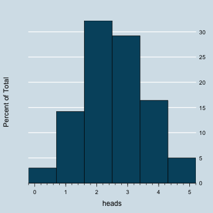

Introduction to Probability
MGCR 271
Ramnath Vaidyanathan
Assistant Professor, McGill
Introduction
ggplot2
Check OpenCPU Template
Question
How many different ways can we pick two marbles from a bag containing three marbles, colored red, blue and green?
- 3
- 6
- 9
This is the answer.
Text Question
This question requires a text input as answer. What is 5 + 5?
Think addition!
It is trivial
What is Probability?
Probability is the
Birthday Problem
Hypothesise
Let us start by hypothesizing what the answer could be.
Simulate
We will use simulation to answer our question. Click here and open in a new tab.
Use R
There are two built in functions pbirthday and qbirthday which calculate the probability of a coincidence and the minimum number of people required for a given probability of coincidence. You can get more details by typing ? pbirthday in RStudio
Here are some hints on how to apply these functions
pbirthday(n = 60) # prob. at least two people share a bday
pbirthday(n = 60, coincident = 3) # prob. at least three people share a bday
qbirthday(prob = 0.5, class = 365) # min. number required for a 50% prob. of common bday
qbirthday(prob = 0.8, class = 30) # min. number required for a 80% prob. of common month
Question 1
What is the minimum number of people required for a 99% probability of a common birthday? Choose the closest possible answer.
- 30
- 40
- 60
- > 100
Question 2
What is the minimum number of people required for a 99% probability of a common birthday?
Let's Make a Deal
Motivate
Should we base decisions on our intuition? Let's check your intuition to determine a probability with Monty Hall's Let's Make A Deal.
Monty Hall's game show Let's Make A Deal was a popular seventies game show. Nearly the entire audience dresses up in costumes hoping that Monty Hall would select them out of the crowd and offer them a chance to win a fabulous prize. He might offer $100 for every paper clip in your possession!
Here is the situation: Suppose you are given three doors to choose from. Behind one door there is a big prize (a car) and behind the other two, there are goats. Only Monty Hall knows which door has the prize. You are asked to select a door, and then Monty opens a different door, showing you a goat behind it. Then you are asked the big question: Do you want to stay with your original door, or switch to a different door?
Question: Do you have a higher chance of winning the prize if you stay with your first door selection, or switch to the remaining door?
Hypothesize
Let us start by hypothesizing what the answer could be.
Simulate
Ponder
One Son Policy
Motivate
In the early 1990’s China considered adopting a "one son" policy, to help reduce their birthrate by allowing families to keep having children until they had a son. Under this plan a family has a child. If it is a son, they stop having children. If it is a daughter, they can try again. They can keep trying until they have a son and then they stop having children.
In small groups, discuss the following questions:
- If a country adopted this “one son” policy, what would you expect the average number of children to be for a family, and why?
- What would you expect the ratio of boys to girls to be (more girls than boys, more boys than girls, equal numbers of girls and boys)? Why?
Think
Working in teams, take a yogurt container that contains two slips of paper. One is labeled B for boy. One is labeled G for girl. You are going to randomly draw one slip of paper from the container and that will be the first child born in a simulated family. If you draw a B, then stop. Enter the data on the chart below. If it is a G, draw again. Keep drawing until you draw a B, then stop and enter the data on the chart below. Repeat this process for 5 simulated families. For example: GB, B, GGB, B, GB, etc.
Hypothesize
Simulate
Flip Coins with R
Flipping a Coin
We can use R to simulate the physical process of flipping a coin. You will need to install the mosaic package, which can be done by typing install.packages('mosaic') in RStudio
Let us start by flipping a coin 5 times
rflip(5)
Flipping 5 coins [ Prob(Heads) = 0.5 ] ...
T T T H T
Result: 1 heads.
Flipping Multiple Times
We can flip a coin 5 times and automatically count the number of heads tossed
nflip(5)
## [1] 1
Flipping a Coin 500 times
We can now repeat the process of flipping 5 coins, 500 times and plot a histogram of the distribution.
do500 = do(500) * rflip(5) # flip 5 coins, 500 times
histogram(~ heads, data = do500, nint = 6) # plot a histogram of number of heads
